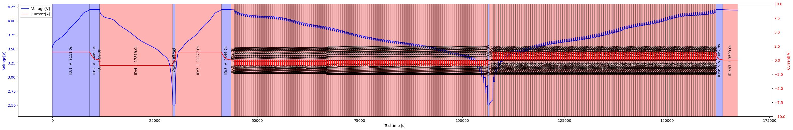

Tutorial 3 - Sequence#
[1]:
import matplotlib.pyplot as plt
import pydpeet as eet
eet.set_logging_style("ERROR")
It is easier to analyze Battery Data, when you have unified stepnames and parameter
[2]:
Data = eet.read(config="neware_8_0_0_516", input_path=r"..\..\res\raw\Cal_Ageing_Checkup1.xlsx")
[3]:
Sequenced_Data = eet.add_primitive_segments(Data)
eet.visualize_phases(
dataframe=Sequenced_Data,
# ...
)
plt.show()

[4]:
Sequenced_Data.head()
[4]:
| Meta_Data | Step_Count | Voltage[V] | Current[A] | Temperature[°C] | Test_Time[s] | Date_Time | EIS_f[Hz] | EIS_Z_Real[Ohm] | EIS_Z_Imag[Ohm] | ... | ID | Variable | Duration | Length | Min | Max | Avg | Type | Direction | Slope | |
|---|---|---|---|---|---|---|---|---|---|---|---|---|---|---|---|---|---|---|---|---|---|
| 0.0 | 20240201100904-CheckUp-3-7-AM23NMC00009.xlsx U... | 0 | 3.5269 | 1.4378 | 27.8 | 0.0 | 2024-02-01 10:09:04 | None | None | None | ... | 1 | V | 9112 | 9111.0 | 3.5269 | 4.2001 | 3.889836 | Ramp | Up | 0.000074 |
| 1.0 | None | 0 | 3.5287 | 1.4398 | 27.8 | 1.0 | 2024-02-01 10:09:05 | None | None | None | ... | 1 | V | 9112 | 9111.0 | 3.5269 | 4.2001 | 3.889836 | Ramp | Up | 0.000074 |
| 2.0 | None | 0 | 3.5298 | 1.4400 | 27.8 | 2.0 | 2024-02-01 10:09:06 | None | None | None | ... | 1 | V | 9112 | 9111.0 | 3.5269 | 4.2001 | 3.889836 | Ramp | Up | 0.000074 |
| 3.0 | None | 0 | 3.5307 | 1.4400 | 27.8 | 3.0 | 2024-02-01 10:09:07 | None | None | None | ... | 1 | V | 9112 | 9111.0 | 3.5269 | 4.2001 | 3.889836 | Ramp | Up | 0.000074 |
| 4.0 | None | 0 | 3.5315 | 1.4401 | 27.8 | 4.0 | 2024-02-01 10:09:08 | None | None | None | ... | 1 | V | 9112 | 9111.0 | 3.5269 | 4.2001 | 3.889836 | Ramp | Up | 0.000074 |
5 rows × 22 columns
[5]:
eet.print_references()